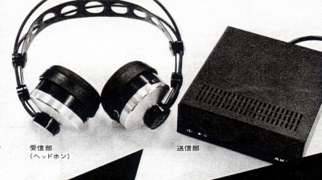
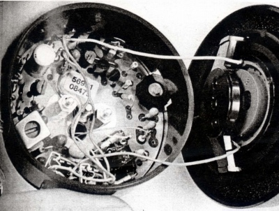
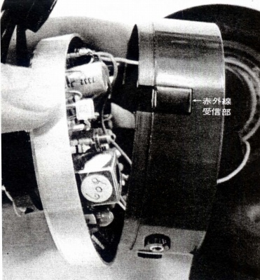
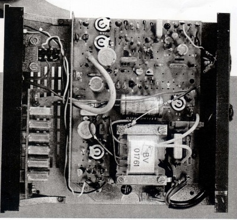
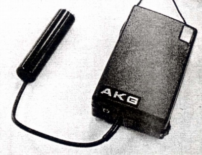

K140WL
 


パイオニア・エンタープライズが代理店になってしばらくして、「ラジオ技術」誌に単に「K140」という型番で、赤外線ワイヤレス機が紹介された。この機の存在が阪田商会時代のK140カルダンがK140/4、K140と名称を変えて販売された原因ではないか？なおこのワイヤレス版K140が実際に国内で発売されたかどうかは不明だが、AKGのサイトにK140WLとして残っているので、本国などでは販売された模様。
現在のところ管理人が知る範囲では最古の赤外線ワイヤレス機である。当時の国産メーカーのワイヤレスはFMトランスミッターを利用したものだったし、ゼンハイザーのHDI-434/SI-434より早い。（国産の赤外線ワイヤレス機でいえば、ソニーのMDR-IF5Kの発売は1989年である。）

通常のヘッドフォンをワイヤレスにするアダプターも用意されていた。
AKGのインデックスへ